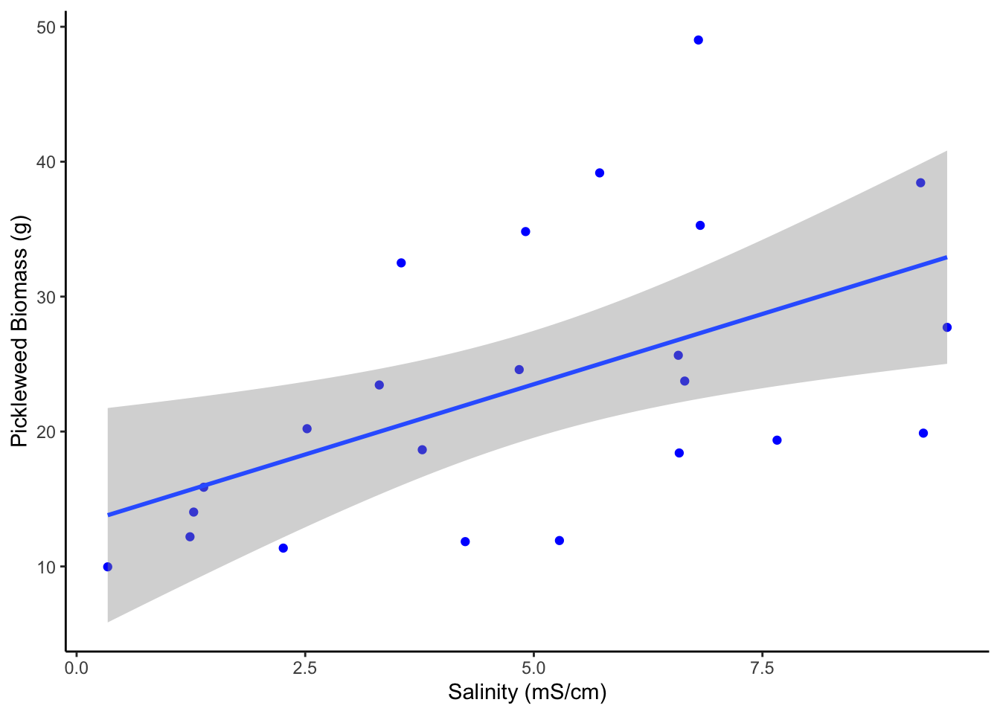
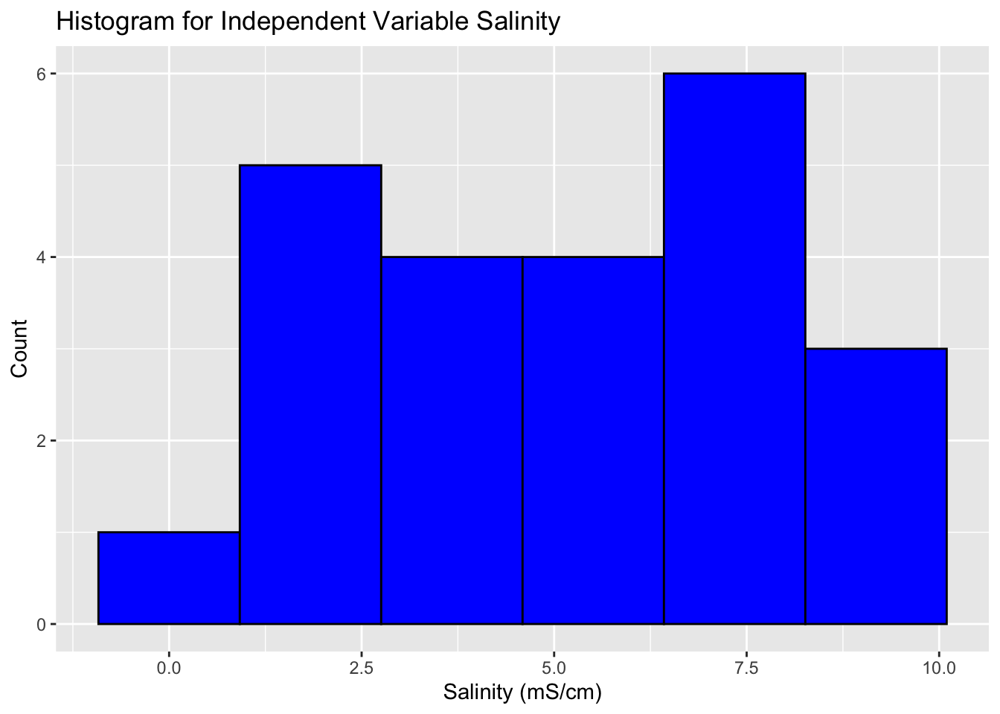
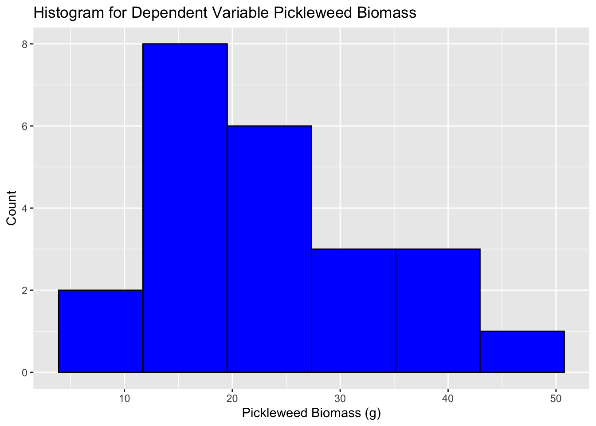
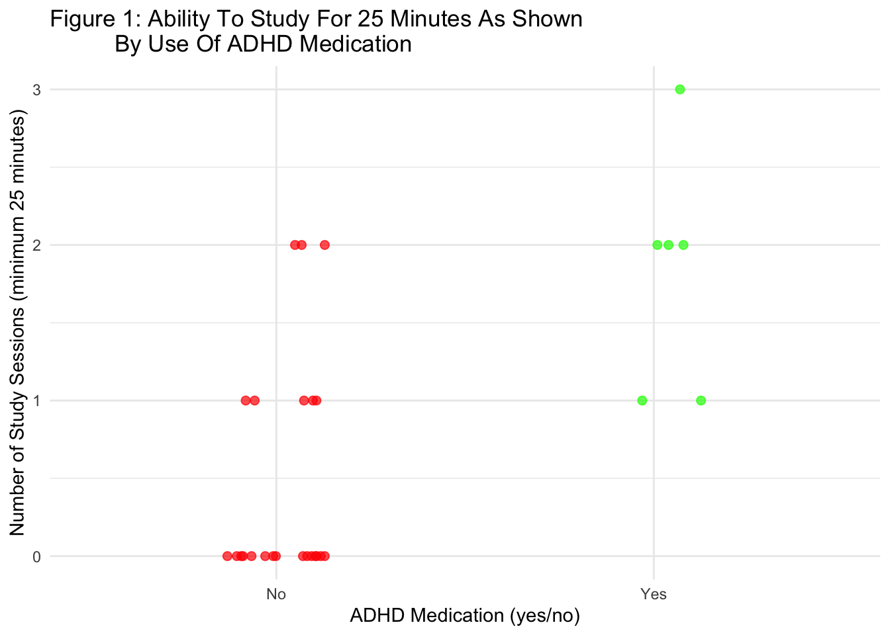
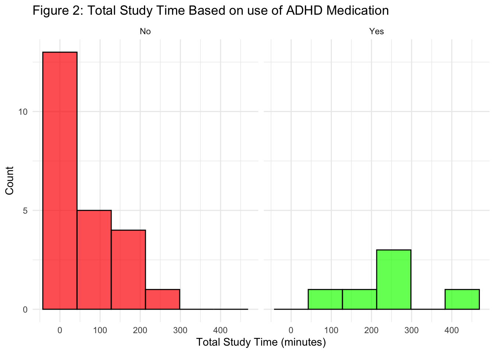

library(here)
library(tidyverse)
library(janitor)
#create object for salinity data
salinity <- read_csv(here("homework_3", "data", "salinity-pickleweed.csv"))
#create object for personal data
personal <- read_csv(here("homework_3", "data", "final_data.csv")) |>
clean_names() |>
mutate(adhd_medicatoin_yes_no = str_to_title(adhd_medicatoin_yes_no))homework_3_code
Problem 1
- An appropriate test
To determine the strength of the relationship between salinity and California pickle weed biomass, we can use a Pearsons correlations and a Spearmans rank correlation test. Pearsons correlations test assumes data is normally distributed while spearmans correlations test does not require the assumption of normality.
- Create a visualization
ggplot(data = salinity,
aes(x = salinity_mS_cm,
y = pickleweed)) +
labs(x = "Salinity (mS/cm)",
y = "Pickleweed Biomass (g)") +
theme_classic() +
geom_point(color = "blue") +
geom_smooth(method = lm)
- Check your assumptions and run your test
Checking assumptions:
#Visualize distribution of salinity
ggplot(salinity, aes(salinity_mS_cm)) +
geom_histogram(bins = 6,
fill = "blue",
color = "black") +
labs(title = "Histogram for Independent Variable Salinity",
x = "Salinity (mS/cm)",
y = "Count")
The distribution of soil salinity looks normally distributed.
#Visualize distribution of pickleweed biomass
ggplot(salinity, aes(pickleweed)) +
geom_histogram(bins = 6,
fill = "blue",
color = "black") +
labs(title = "Histogram for Dependent Variable Pickleweed Biomass",
x = "Pickleweed Biomass (g)",
y = "Count")
The distribution of pickleweed biomass in grams looks normally distributed.
#Check normality with shapiro test
shapiro.test(salinity$salinity_mS_cm)
Shapiro-Wilk normality test
data: salinity$salinity_mS_cm
W = 0.95984, p-value = 0.4601shapiro.test(salinity$pickleweed)
Shapiro-Wilk normality test
data: salinity$pickleweed
W = 0.9299, p-value = 0.1088To check the assumptions of a persons correlation test, I created a histogram to visualize the distribution of both the independent variable Pickleweed biomass and the independent variable soil salinity as well as ran a shapiro wilks correlation test. Based on the shape of the histogram for both pickleweed biomass and soil salinity, both variables seem to be normally distributed. To confirm this, I ran a shapiro wilks test for both variables which returned a p-value greater than .05 both confirming normal distribution.
#Check linear relationship with qqplotweek 8 notes for the 24th of febuary
check normality and linear relationship with qqplot
qq plots
Running Pearson Correlation:
cor.test(salinity$salinity_mS_cm,
salinity$pickleweed,
method = "pearson")
Pearson's product-moment correlation
data: salinity$salinity_mS_cm and salinity$pickleweed
t = 2.8979, df = 21, p-value = 0.008605
alternative hypothesis: true correlation is not equal to 0
95 percent confidence interval:
0.1568265 0.7757682
sample estimates:
cor
0.5344778 - Results communication
To evaluate the strength of the relationship between pickleweed biomass and soil salinity, I used a pearsons correlation test which relies on the assumption that data is normally distributed. We found a moderate relationship between soil salinity and pickleweed biomass (Pearson’s r = 0.53, t(21) = 2.9, p = 0.00, ⍺ = 0.05, 95% CI: 0.16 to 0.78).
- Test implications
Based on the moderate positive correlation found between pickleweed biomass and soil salinity, it appears that pickleweed biomass is larger in places with higher soil salinity. When it comes to restoration, I would recommend cultivating pickle weed in areas with higher soil salinity to increase chances of successful restoration.
- Double check
cor.test(salinity$salinity_mS_cm,
salinity$pickleweed,
method = "spearman")
Spearman's rank correlation rho
data: salinity$salinity_mS_cm and salinity$pickleweed
S = 824, p-value = 0.003426
alternative hypothesis: true rho is not equal to 0
sample estimates:
rho
0.5928854 In running a spearmans correlation test, we found a moderate positive correlation between soil salinity and pickleweed biomass (Spearman p = 0.59, S = 824, p = .003, ⍺ = 0.05) which is consistent with our results from the persons correlation test (Pearson’s r = 0.53, t(21) = 2.9, p = 0.00, ⍺ = 0.05, 95% CI: 0.16 to 0.78). With that said, both tests would have led me to reject the null that there is no relationship between soil salinity pickleweed biomass and decide that there is a moderate, positive correlation between these variables.
Problem 2: Personal Data
- Updating your visualizations
#Categorical Visualization
ggplot( #start to visualize
data = personal, #specify data set
aes(
y = full_study_sessions, #choosing this as my x variable
x = adhd_medicatoin_yes_no, #choosing this as my y variable
color = adhd_medicatoin_yes_no #changing color based on variable ADHD medication
)) +
geom_jitter( #calling jtter argument
width = 0.15, #width of jitter
height = 0, #height stays 0
size = 2,
alpha = 0.7) +
scale_color_manual( #manually choose colors
values = c(
"Yes" = "green",#green for yes values
"No" = "red" #red for no values
)) +
labs( #make proper labels
y = "Number of Study Sessions (minimum 25 minutes)", #specify label for x axis
x = "ADHD Medication (yes/no)", #specify label for y axis
title = "Figure 1: Ability To Study For 25 Minutes As Shown
By Use Of ADHD Medication", #come up with a descriptive title
color = "ADHD Medication" #I chose to include the key to show how use of ADHD medication affects my ability to study for 25 consecutive minutes; sort this by color
) +
theme_minimal() + #change theme
theme(legend.position = "none") 
#Continuous Variable
ggplot( #create plot
data = personal, #call in personal data
aes(
x = total_study_time_mins, #x axis is total study time in minutes
fill = adhd_medicatoin_yes_no)) + #filling the histogram color if I took ADHD medication or not
geom_histogram(bins = 6, #rice rule needs 6 bins
color = "black", #boarders black
alpha = 0.7) + #slightly translucent
facet_wrap( #create separate panels for ADHD meds vs vs no ADHD meds
~ adhd_medicatoin_yes_no) + #choose category to divide histogram based off of
scale_fill_manual( #fill the inside of histogram colors
values = c("Yes" = "green", #green deontes a yes
"No" = "red")) + #red denotes a no
labs( #make good labels
x = "Total Study Time (minutes)", #x axis is total study time
y = "Count", #y is always count
title = "Figure 2: Total Study Time Based on use of ADHD Medication" #creative title
) +
theme_minimal() + #change theme
theme(legend.position = "none") #choose to not display ledgend 
- Captions
Figure 1 shows the relationship between ADHD medication and quantity of minimum 25 minute study sessions. Each point represents an observation for a day in which the individual either took ADHD medication or did not and how many study sessions took place on that day. On days with no ADHD medication, there is a majority of observations for 0 study sessions. On days with ADHD medication there are no observations of 0 study sessions suggesting that ADHD medication corresponds to at least 1 study session on that given day.
Figure 2 shows the relationship between total study time and use of ADHD medication. Each point represents an observation for a day in which the individual either took ADHD medication or did not and how many minutes the individual studied for. On days without ADHD medication, 0 minutes were studied for the majority of the time. On days with ADHD medication, there was a minimum of 100 minutes studied for each day suggesting that ADHD medication leads to longer study sessions.
Problem 3. Affective visualization
- Describe Affective Visualization
In looking at my data, I noticed that the majority of the time I did not take ADHD medication, I did not begin to study, however, every time I took ADHD medication, I studied at least for a little bit. In thinking about this fact, an affective visualization for my data could involve proportions of the amount of times I studied compared to the amount of times I did not study based on whether or not I took ADHD medication. I think it would be fun to represent these proportions in the form of multicolored pills that resemble the medication I take for ADHD.
- Create a Sketch

Create a Draft
Write an artist statement.
Content: I will be displaying the amount of days I studied compared to the days I do not study in relation to whether or not I took ADHD medication that day. I will displaying this information in proportions color coded onto two clay pills that resemble common ADHD medication.
Influences: I was influenced by the popular film the Matrix where the main character gets to choose between two pills that will alter the course of the movie. I was also influenced by the affective visualization about proportion of free and enslaved people from Atlanta University.
Form: I will be working with clay and paint to represent my data
Process: I plan writing code to get a feel for how I can accurately visualize the proportions I want to represent. Then I will purchase clay and work with it until it resembles the shape of common ADHD medication. Then I will paint this clay to accurately show my proportions.
- Prep your materials to share in class Slideshow for class
Problem 4: Statistical Critique
- This paper uses a Pearson correlation and linear regressions test to analyze data. The response variable here is giant kelp mass measured in square meters of kelp canopy area and the predictor variables are wave height in meters, sea surface temperature in Celsius, and climate indices such as the North Pacific Gyre Oscillation.